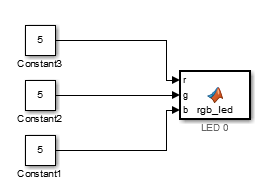
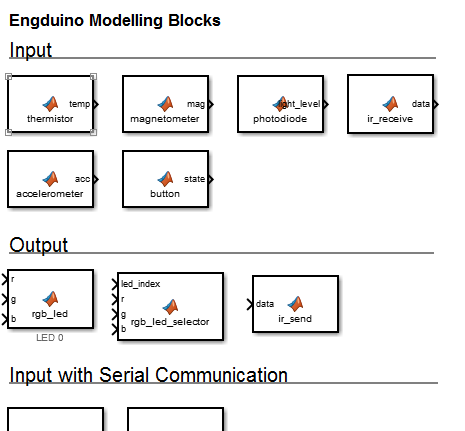

Getting Started with Engduino® Hardware
This example shows how to use Simulink Package for Engduino Hardware to run a Simulink(r) model on Engduino board.
Supported Hardware
- Engduino v1
- Engduino v2
- Engduino v3
Version for this example
The provided model is pre-configured with the Engduino v3 which uses the Arduino Lilypad hardware. Other version of Engduino is also supported.
Contents
Introduction
Simulink Support Package for Engduino Hardware enables you to create and run Simulink models on the Engduino board. The toolbox contains the modelling blocks for configuring and accessing, Engduino sensors, actuators and communication interfaces. In this example, you will learn how to create a Simulink model that set the led colour of the Engduino.
Prerequisites
If you are new to Simulink, we recommend completing the Interactive Simulink Tutorial, reading the Getting Started section of the Simulink Documentation and running Simulink Getting Started Example.
Model
The following figure shows the example model

Task 1 - Open the engduino driver model
All the Engduino block is located in a file named engduino_driver.slx which is located in the Simulink Support Package for Engduino folder.
- In MATLAB, select HOME > Add-ons > Manage Custom Toolboxes, find the Simulink support package for Engduino and click open folder. This will load the toolbox to the current folder.
- Under the toolbox folder, go to example, locate the engduino_driver.slx file which contains all the modelling blocks for Engduino.
- Open the file in Simulink,double-click the rgb_led block under output. Review the block mask, which contains a description of the block and parameters for selecting the leds.

Task 2 - Create a model for Engduino Hardware
In this task, you will create a simple Simulink model that changes the colour of the Engduino LED.
- Create a new Simulink script in your workspace. Include the libraries and src folder in the toolbox to your workspace. These two folders are needed for the Engduino's modelling blocks to reference them. You can either create a link to the folder or simply copy these two folders to your workspace.
- Copy the rgb_led block from the engduino_driver.slx file to your model.
- Double-click the rgb_led block. Set the LED Index parameter to 0.
- Open the Simulink Library Browser, under Simulink > Commonly Used Blocks, drag the Constant block to your model.
- Copy the constant block and create two more of them in your model.
- Connect the constant blocks to the r,g,b input of the rgb_led block.
- Double-click the constant block and set the Constant value to an integer in the range of 0-15.
- Save the model to your workspace.
Task 3 - Configure and run the Model on Engduino Hardware
In this task, you will configure and run your model on the Engduino hardware
- Connect the Engduino board to your computer with a USB Cable and turn on the Engduino.
- In your Simulink model, click Tools > run on Target Hardware > Prepare to Run...
- When the Configuration Parameters page opens up, set the Target hardware parameter to Arduino Lilypad. Do not change any other settings.
- Click Ok.
- In your Simulink model, click the Deploy to Hardware button on the toolbar. The model will now be deployed to the connected Engduino hardware.
- Look at LED 0, the LED should light up with a colour configured by the r,g,b value you have just set.
Other Things to Try
- Change the colour of the led by changing the constant value.
- Create a model that turn on/off the led when the button is pressed.
Summary
This example introduced the workflow for creating an algorithm from a Simulink model and then running it on the Engduino board. in this example, you learned that
- The Engduino modelling block is located in the Simulink Support Package for Engduino hardware and not in the usual Simulink Library browser.
- To set up your workspace for your new model, you need to include the libraries and src folder
- You can deploy the model to Engduino